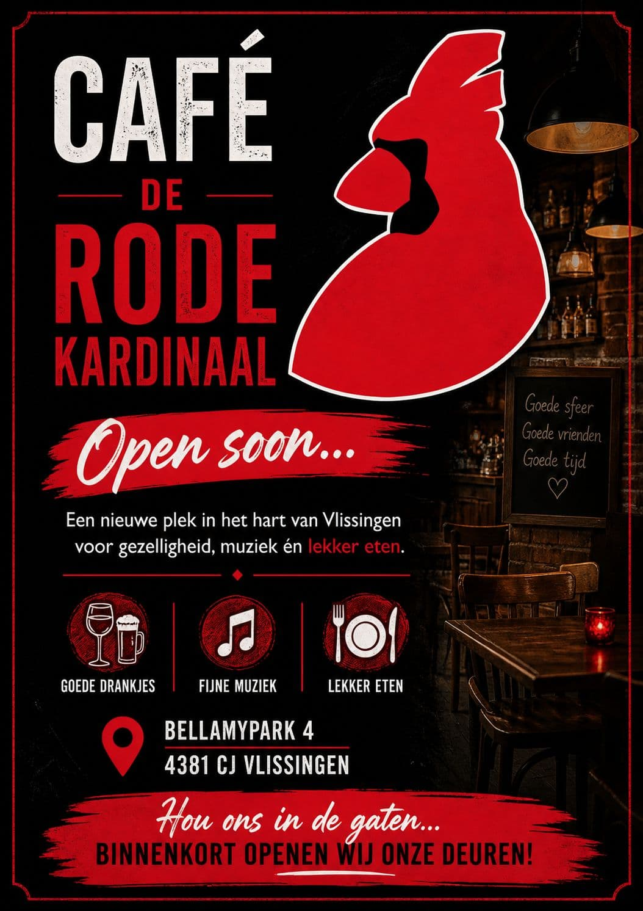

Binnenkort geopend in het hart van Vlissingen
Een nieuwe plek voor gezelligheid, muziek én lekker eten

Bellamypark 44381 CJ Vlissingen
Binnenkort openen wij onze deuren!Volg ons en mis de opening niet.